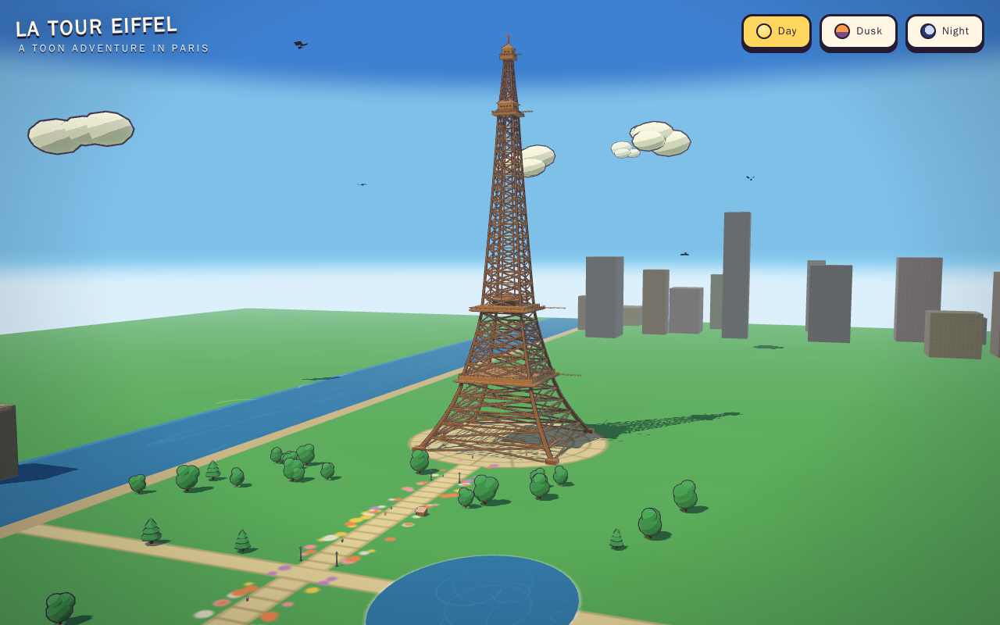
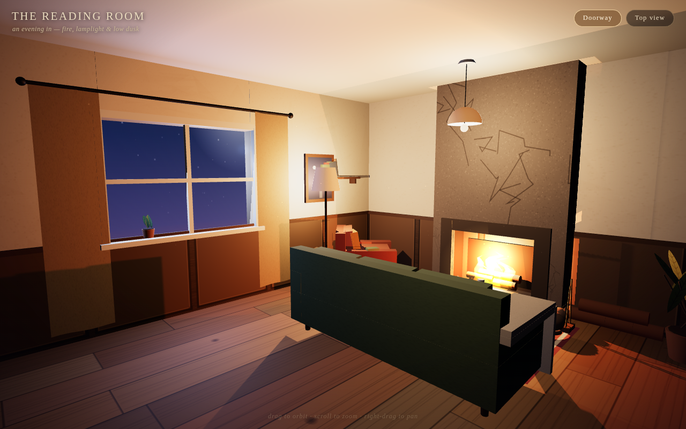

Qwen3.8-27B
4-bit MLXLM Studio MLX 4-bit, built by Kapitsa with Qwen's MTP head and nace-ai DFlash2 drafterkapitsa 0.2.34 · M3 Ultra
Tasks run2
Working results2 of 2
Attempts2
Generated tokens373.8K
Energy191 Wh
Results
Every attempt, newest first per task. Faded rows are earlier attempts that were retried.
| Task | Run ended · judged page | Generated | Reasoning | Model calls | Tool errors | Energy | Wall | |
|---|---|---|---|---|---|---|---|---|
 |
Eiffel Tower 1 of 1 |
agent finished 1 canvas · 0 missing files · 0 page errors |
204.6K | 151.1K | 122 | 3 | 118.28 Wh | 1 h 49 min |
 |
Reading room 1 of 1 |
agent finished 1 canvas · 0 missing files · 0 page errors |
169.2K | 125.3K | 64 | 0 | 72.98 Wh | 60 min |
* Reasoning estimated from the raw stream where the engine reports one combined count. Wall time depends on hardware and is not ranked.
Pack and engine
- Model
- Qwen3.8-27B
- Quant
- 4-bit MLX
- Pack
- lmstudio-community/Qwen3.8-27B-MLX-4bit · LM Studio MLX 4-bit, built by Kapitsa with Qwen's MTP head and nace-ai DFlash2 drafter
- Also loaded
- nace-ai/Qwen3.8-27B-DFlash2-Kapitsa (drafter) · MTP head from Qwen/Qwen3.8-27B
- Revision
- pinned by the Kapitsa 0.2.34 catalog (qwen3.8-27b:4bit)
- Size on disk
- 20.2 GB
- Engine
- kapitsa 0.2.34
- Engine settings
- context=262144, slots=8, prefill_chunk=2048, disk_cache=32G, speculative=MTP head + DFlash2 drafter
- Hardware
- M3 Ultra 60c / 256 GB
- Request
- {"reasoning_effort": "high"}
- Reasoning effort
- high
- Thinking budget
- Not explicitly recorded; engine/provider default unknown
- Output limit
- 65.5K tokens per response, including reasoning